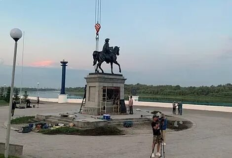
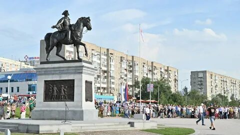

Логистика: 680 км, удобно на авто.
Что посмотреть: Абалакский монастырь, ротонда на Иртыше, старинные купеческие дома. Вдохновляйтесь повестями Достоевского и пейзажами, что он видел в ссылке.
Книги перед поездкой: «Записки из Мёртвого дома» Ф.М. Достоевского, стихи Л. Мартынова, легенды манси «Священная земля Югры».
Сувениры: резные костяные изделия, кедровые орешки, иртышская керамика.
💡 Совет: берите с собой термос с чаем и фотоаппарат — виды там невероятные.
⭐ Маршрут оптимизирован с помощью алгоритмов дискретной математики.
Что посмотреть: Этнографический музей под открытым небом «Торум Маа», священные лабазы, традиционные промыслы хантов и манси.
События: Медвежий праздник (февраль–март), Вороний день (апрель).
Рекомендуемая литература: Мифы и легенды обских угров, «Югра – земля легенд».
💡 Совет: берите с собой термос с чаем и фотоаппарат — виды там невероятные.
Старейшие города Сибири: деревянное зодчество, купеческие особняки, Тобольский кремль – единственный каменный кремль за Уралом.
Особое внимание: Спасская церковь в Таре, ансамбль Любинского проспекта в Омске.
💡 Совет: берите с собой термос с чаем и фотоаппарат — виды там невероятные.
Восстановление исторической памяти на берегах Иртыша

Памятник сибирскому казаку до начала работ.

Полностью восстановленный монумент. Работы проведены волонтёрами и историками-энтузиастами.
Каждый восстановленный памятник — это возвращённая страница истории Обь-Иртышья.